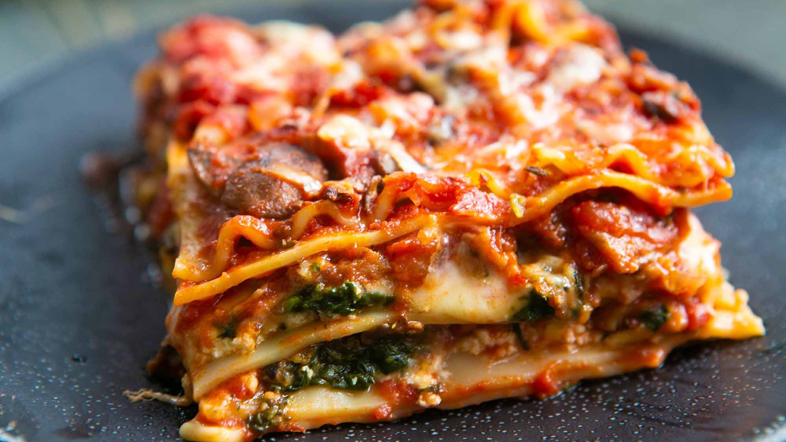

Lasagna recipe

Description
Stuck for ideas on what to cook for dinner? Craving a bit of some classic Italian? You can never go wrong with a
lasagna! Check out our recipe in order to learn how to cook this beautiful, cheesy, meaty dish to a restaraunt
quality level. Best of all, you don't need to be a culinary genius to do it!
Ingredients
- 1 (16 ounce) package lasagna noodles
- 1 pound lean ground beef
- salt and pepper to taste
- 1 (16 ounce) jar spaghetti sauce
- 1vclove garlic, minced
- ½ pound shredded mozzarella cheese
- ½ pound shredded mozzarella cheese
- 1 pint ricotta cheese
Steps
- Bring a large pot of lightly salted water to a boil. Add pasta and cook for 8 to 10 minutes or until al dente; drain.
- Preheat oven to 350 degrees F (175 degrees C). In a large skillet over medium-high heat, brown beef and season with salt and pepper; drain. Stir in spaghetti sauce and garlic and simmer 5 minutes.
- In a medium bowl, combine mozzarella, Cheddar and ricotta; stir well. In 9x13 inch pan, alternate layers of noodles, meat mixture and cheese mixture until pan is filled.
- Bake in preheated oven for 30 minutes, or until cheese is melted and bubbly.